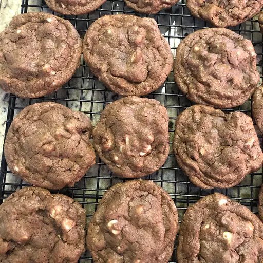

White Chip Chocolate Cookies
White Chip Chocolate Cookies

Description
This white chocolate chip cookie recipe is my favorite — my grandma used to make it for me. These cookies are really good with a tall glass of cold milk.
Ingredients
- 2 cups all-purpose flour
- ¾ cup unsweetened cocoa powder
- 1 teaspoon baking soda
- ½ teaspoon salt
- 2 cups white sugar
- 1 cup unsalted butter, softened
- 2 large eggs
- 2 teaspoons vanilla extract
- 1 ⅔ cups white chocolate chips
Steps
- Preheat the oven to 350 degrees F (175 degrees C).
- Combine flour, cocoa, baking soda, and salt in a bowl.
- Beat sugar and butter with an electric mixer in a large bowl until smooth and creamy. Add eggs, one at a time, beating well after each addition. Stir in vanilla. Gradually mix in dry ingredients, then fold in white chocolate chips. Drop by rounded teaspoonfuls onto ungreased baking sheets.
- Bake in the preheated oven until set, 8 to 10 minutes. Remove from the oven, let cool on the baking sheets for 5 minutes, then transfer to a wire rack to cool completely.
Come back to recipes...